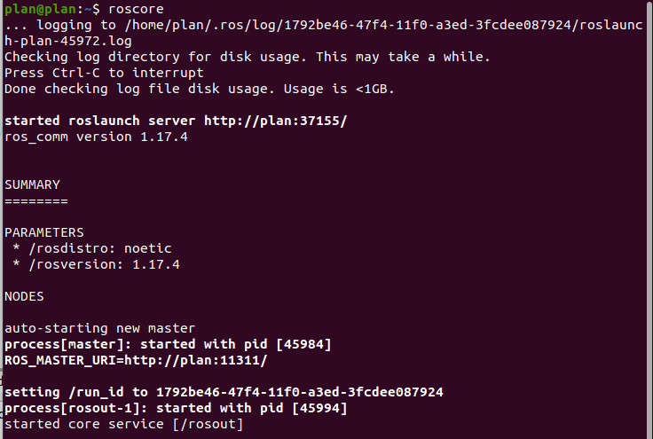

1 DR100介绍
2 工控机环境
2.1 硬件环境
- 处理器：CPU-Intel i5
- 内存：32G
- 硬盘：128G SSD
- 电源：DC12V
- 接口：VGA, HDMI, LAN, USB2.0, USB3.0
2.2 软件环境
- 系统版本：Ubuntu-20.04
- ROS版本：ROS Noetic Ninjemys
- GTSAM 版本: v4.1.0
2.2.1 Ubuntu-20.04安装
进入Ubuntu Releases下载Ubuntu 20.04 LTS镜像。
下载后，推荐使用Rufus烧录镜像到U盘，注意会清空U盘原有文件。
如图，先选择需要烧录的U盘，然后选择上一步下载的镜像文件，点击“开始”将镜像烧录到U盘
最后将U盘插入工控机，通过启动盘引导，根据需求自行安装，此部分请参考网上的Ubuntu安装相关文章，本文不再赘述。
2.2.2 ROS Noetic 安装
参考文档：
ROS WIKI:
https://wiki.ros.org/noetic/Installation/UbuntuROS WIKI 简体中文:
https://wiki.ros.org/cn/noetic/Installation/Ubuntu
配置Ubuntu软件仓库，并设置密钥：
sudo sh -c '. /etc/lsb-release && echo "deb http://mirrors.tuna.tsinghua.edu.cn/ros/ubuntu/ `lsb_release -cs` main" > /etc/apt/sources.list.d/ros-latest.list'
sudo apt-key adv --keyserver 'hkp://keyserver.ubuntu.com:80' --recv-key C1CF6E31E6BADE8868B172B4F42ED6FBAB17C654
安装ROS：
sudo apt update
sudo apt install ros-noetic-desktop-full
设置环境：
echo "source /opt/ros/noetic/setup.bash" >> ~/.bashrc
source ~/.bashrc
安装后，在终端执行roscore，测试ROS：

2.2.3 GTSAM
GTSAM官方:
https://github.com/borglab/gtsam
自行根据GTSAM官方安装v4.1.0
3 ROS基础教程
参考文档:
ROS教程 - ROS Wiki:
https://wiki.ros.org/cn/ROS/Tutorials/NavigatingTheFilesystem
ROS是一个适用于机器人的开源的元操作系统。它提供了操作系统应有的服务，包括硬件抽象，底层设备控制，常用函数的实现，进程间消息传递，以及包管理。它也提供用于获取、编译、编写、和跨计算机运行代码所需的工具和库函数。在某些方面ROS相当于一种“机器人框架（robot frameworks）
3.1 ROS常用命令
| 命令 | 作用 |
|---|---|
catkin_create_pkg |
创建功能包 |
rospack |
获取功能包的信息 |
catkin_make |
编译工作空间中的功能包 |
rosdep |
自动安装功能包依赖的其他包 |
roscd |
功能包目录跳转 |
roscp |
拷贝功能包中的文件 |
rosed |
编辑功能包中的文件 |
rosrun |
运行功能包中的可执行文件 |
roslaunch |
运行启动文件 |
3.2 ROS文件系统
ROS文件系统采用层级结构，核心概念包括：
| 概念 | 说明 | 示例命令 |
|---|---|---|
| 工作空间 | 包含功能包的目录 | mkdir -p ~/catkin_ws_demo/src |
| 功能包 | ROS软件的基本单元 | catkin_create_pkg my_pkg rospy |
| 节点 | 可执行程序（功能包中的小程序） | rosrun my_pkg my_node |
3.2.1 创建工作空间
在终端执行命令：
# 创建并编译工作空间
mkdir -p ~/catkin_ws_demo/src
cd ~/catkin_ws_demo
catkin_make # 初始化工作空间
source devel/setup.bash # 激活环境
3.2.2 功能包结构
创建功能包：
cd ~/catkin_ws_demo/src
catkin_create_pkg my_pkg rospy # 创建功能包
典型功能包目录包含：
my_pkg/
├── CMakeLists.txt # 编译规则
├── package.xml # 包信息/依赖
├── scripts/ # Python节点
├── src/ # C++节点源码
└── launch/ # 启动文件
3.3 节点通信模型
3.3.1 核心通信方式
- 话题（Topic） - 异步发布/订阅模式
# 发布者示例 (Python)
pub = rospy.Publisher('chatter', String, queue_size=10)
pub.publish("Hello ROS!")
- 服务（Service） - 同步请求/响应模式
# 服务端示例
srv = rospy.Service('add_two_ints', AddTwoInts, handle_add)
3.3.2 消息类型
| 类型 | 作用域 | 示例 |
|---|---|---|
| std_msgs | 基础数据类型 | Int32, String |
| sensor_msgs | 传感器数据 | Image, LaserScan |
| geometry_msgs | 几何数据 | Pose, Twist |
3.4 实战：创建话题通信
创建发布者节点：
# ~/catkin_ws_demo/src/my_pkg/scripts/talker.py
import rospy
from std_msgs.msg import String
def talker():
pub = rospy.Publisher('chatter', String, queue_size=10)
rospy.init_node('talker_node', anonymous=True)
rate = rospy.Rate(10) # 10Hz
while not rospy.is_shutdown():
msg = "Time: %s" % rospy.get_time()
pub.publish(msg)
rate.sleep()
if __name__ == '__main__':
try: talker()
except rospy.ROSInterruptException: pass
创建订阅者节点：
# ~/catkin_ws_demo/src/my_pkg/scripts/listener.py
import rospy
from std_msgs.msg import String
def callback(data):
rospy.loginfo("Received: %s", data.data)
def listener():
rospy.init_node('listener_node')
rospy.Subscriber("chatter", String, callback)
rospy.spin() # 保持节点运行
if __name__ == '__main__':
listener()
在终端运行编译命令：
sudo chmod +x -R ~/catkin_ws/src/my_pkg/scripts/
cd ~/catkin_ws && catkin_make
打开三个终端分别运行以下命令：
# 终端1：运行rsocore
roscore
# 终端2：运行发布者
rosrun my_pkg talker.py
# 终端3：运行订阅者
rosrun my_pkg listener.py
3.5 使用roslaunch启动系统
<!-- ~/catkin_ws_demo/src/my_pkg/launch/start_demo.launch -->
<launch>
<node pkg="my_pkg" type="talker.py" name="talker" output="screen"/>
<node pkg="my_pkg" type="listener.py" name="listener" output="screen"/>
</launch>
启动命令：
# 终端1：运行rsocore
roscore
# 终端2：运行start_demo.launch
roslaunch my_pkg start_demo.launch
4 外设配置
4.1 Robosense RS-16激光雷达
默认配备的是Robosense RS-16激光雷达，需要将雷达与本机连接的LAN口的ip设置为192.168.1.102
安装依赖：
sudo apt-get update
sudo apt-get install -y libyaml-cpp-dev
sudo apt-get install -y libpcap-dev
RoboSense RS-16的ROS驱动可在官方Github下载：rslidar_sdk:https://github.com/RoboSense-LiDAR/rslidar_sdk
cd ~/catkin_ws/src
git clone https://github.com/RoboSense-LiDAR/rslidar_sdk.git --depth 1
cd rslidar_sdk
git submodule init
git submodule update
cd ~/catkin_ws
catkin_make # 编译
运行：
roslaunch rslidar_sdk start.launch
驱动加载后，可使用rostopic获取雷达数据：
rostopic echo /rslidar_points
也可以通过rviz查看点云
4.2 IMU
默认配备维特智能九轴IMU HWT906，可参考官方手册HWT906产品资料，进行配置与校准
ROS驱动安装：
sudo apt-get install libqt5serialport5-dev
cd catkin_ws
git clone --recursive https://github.com/ElettraSciComp/witmotion_IMU_ros.git src/witmotion_ros
catkin_make
运行：
roslaunch witmotion_ros witmotion.launch
5 三维仿真导航实验
5.1 工程环境
从PlanRobotShenZhen Githubhttps://github.com/PlanRobotShenZhen/outdoorRobot.git或压缩包提取工程
5.1.1 工程目录结构
~/catkin_ws
├── maps
├── README.md
├── src
│ ├── bot_navigation
│ ├── CMakeLists.txt
│ ├── dr100
│ │ ├── dr100
│ │ ├── dr100_chassis_driver
│ │ ├── robosense_simulator
│ │ ├── rslidar_sdk
│ │ ├── rs_to_velodyne
│ │ ├── velodyne_simulator
│ │ └── witmotion_ros
│ ├── mapping
│ │ ├── LIO-SAM
│ │ ├── pcd2pgm
│ │ ├── SC-LeGO-LOAM
│ │ └── swap_map_xyz.py
│ └── nav_stack
│ ├── hdl
│ │ ├── fast_gicp
│ │ ├── hdl_global_localization
│ │ ├── hdl_localization
│ │ └── ndt_omp
│ └── navigation
└── tools
~/catkin_ws(ROS工作空间根目录)maps/：存放建图生成点云地图文件（如.pcd）src/：核心功能包源码目录bot_navigation/：机器人导航相关功能包dr100/：机器人硬件驱动与仿真dr100_chassis_driver/：底盘驱动robosense_simulator/&velodyne_simulator/：激光雷达仿真rslidar_sdk/&rs_to_velodyne/：雷达驱动与数据转换witmotion_ros：IMU 驱动包
mapping/：SLAM建图算法包LIO-SAM/&SC-LeGO-LOAM/：激光惯性SLAM算法pcd2pgm/：点云转栅格地图工具
nav_stack/：导航算法栈hdl/：点云处理相关（如hdl_localization定位模块）navigation/：传统导航算法（如代价地图、全局/局部规划）
tools/：辅助工具或脚本（非ROS功能包）
5.1.2 工程编译
将工程放于用户的主目录，然后安装依赖：
sudo apt-get install -y libyaml-cpp-dev
sudo apt-get install -y libpcap-dev
sudo apt-get install -y libqt5serialport5-dev
sudo apt-get install -y ros-noetic-navigation
sudo apt-get install -y ros-noetic-robot-localization
sudo apt-get install -y ros-noetic-robot-state-publisher
sudo apt-get install -y ros-noetic-navigation*
sudo apt-get install -y ros-noetic-pointcloud-to-laserscan
sudo apt-get install -y ros-noetic-teb-local-planner
sudo apt-get install -y ros-noetic-serial
注：需要根据官方文档安装gtsam v4.1.0 https://github.com/borglab/gtsam
编译：
# catkin_make clean # 可以使用catkin_make clean测试检查是否缺少依赖
# 1. 单独编译 lego_loam 的消息文件cloud_msgs (单线程)
catkin_make --pkg cloud_msgs -j1
# 2. 编译剩余所有包 (多线程)
catkin_make -DCATKIN_WHITELIST_PACKAGES="" -j4 -DCMAKE_BUILD_TYPE=Release
端口设置：
sudo cp ~/catkin_ws/tools/serial/serial_rules/* /etc/udev/rules.d/
sudo udevadm control --reload-rules
sudo udevadm trigger
sudo usermod -aG dialout plan
sudo usermod -aG dialout root
注：端口设置的规则文件可根据具体情况自行修改
5.2 DR100底盘
运行DR100底盘仿真包`dr100_description的run.launch：
source ~/catkin_ws/devel/setup.bash
roslaunch dr100_description gazebo.launch
可在rviz中左侧Add处添加RobotModel与TF查看：
5.3 三维建图
启动DR100底盘仿真后，可以通过LeGO-LOAM或LIO-SAM建图算法进行建图，此处使用LeGO-LOAM进行实验。
首先需要让系统采用仿真时间，即修改~/catkin_ws/src/mapping/SC-LeGO-LOAM/SC-LeGO-LOAM/LeGO-LOAM/launch/run.launch中的/use_sim_time参数为true：
然后执行执行开始建图：
roslaunch lego_loam run.launch
可以使用rqt robot steering控制底盘运动，行驶一遍需要建图的场景进行建图
rosrun rqt_robot_steering rqt_robot_steering
最后使用Ctrl+C结束建图，将自动将3D点云图保存到/home/plan/catkin_ws/maps/LeGO-LOAM/目录
可以使用pcl_viwer finalCloud.pcd查看点云图
5.4 地图转换
5.4.1 点云转栅格地图
3D点云图保存成功后，需将3D点云图转为2D的栅格地图。本文使用pcd2pgm进行转换。
首先根据具体情况修改~/catkin_ws/src/mapping/pcd2pgm/pcd2pgm/launch/run.launch的参数
然后打开三个终端分别运行以下命令，将栅格地图保存到本地，将生成栅格地图finalCloud.pgm与配置finalCloud.yaml：
# 终端一: roscore
roscore
# 终端二: 启动pcd2pgm
roslaunch pcd2pgm run.launch
# 终端三: 保存栅格地图到当前目录，注意不要加.pgm
rosrun map_server map_saver -f finalCloud
5.4.2 参数说明
- file_directory: 存放pcd文件的路径
- file_name: pcd文件名称，默认为
finalCloud - thre_z_min: 选取的范围最小高度
- thre_z_max: 选取的范围最大高度
- flag_pass_through: 选取高度范围内的标志，
0表示保留范围内，1表示保留范围外 - thre_radius: 半径滤波的半径
- thres_point_count: 半径滤波的要求点数个数
- MeanK: 统计学滤波的半径
- StddevMulThresh: 统计学滤波的要求点数个数
- map_resolution: 存储的栅格map的分辨率
- map_topic_name: 转换后发布的二维地图的topic
- use_passthrough_filter: 直通滤波开关
- use_radius_filter: 半径滤波开关
- use_statistical_filter: 统计学滤波开关
5.4.3 编辑栅格地图(可选)
GIMP官网：
https://www.gimp.org/downloads/
3D点云图转换成的2D栅格地图可能存在噪点或障碍物边缘断层等问题，可以使用Adobe Photoshop、GIMP等修图软件进行处理。进行擦除噪点、障碍物描边等操作。本文使用GIMP为例：
5.5 三维导航
5.5.1 替换地图
三维导航需要3D点云图与2D的栅格地图，需要将finalCloud.pcd、finalCloud.pgm、finalCloud.yaml复制到~/catkin_ws/src/bot_navigation/map/3d/lego文件夹下
cp finalCloud.pcd ~/catkin_ws/src/bot_navigation/map/3d/lego/
cp finalCloud.pgm ~/catkin_ws/src/bot_navigation/map/3d/lego/
cp finalCloud.yaml ~/catkin_ws/src/bot_navigation/map/3d/lego/
5.5.2 启动DR100底盘
参考 5.2 DR100底盘
5.5.3 启动导航程序
打开一个新终端启动导航程序
roslaunch bot_navigation navigation.launch
5.5.4 启动ROS导航交互软件
ROS导航交互软件：
https://github.com/chengyangkj/Ros_Qt5_Gui_App
cd ~/catkin_ws/tools/ros_rqt_gui
./ros_qt5_gui_app
可以点击左上角，拖动机器人进行重定位
可以点击编辑地图，添加目标点，进行导航
6 三维实机导航实验
6.1 工程环境
参考 5.1 工程环境
6.2 DR100底盘
需要确保激光雷达、IMU正常链接，然后启动底盘驱动
roslaunch dr100_description run.launch
6.3 三维建图
参考 5.3 三维建图
注意与仿真实验中存在区别，需要把仿真时间禁用
6.4 地图转换
参考 5.4 地图转换
6.5 三维导航
参考 5.5 三维导航